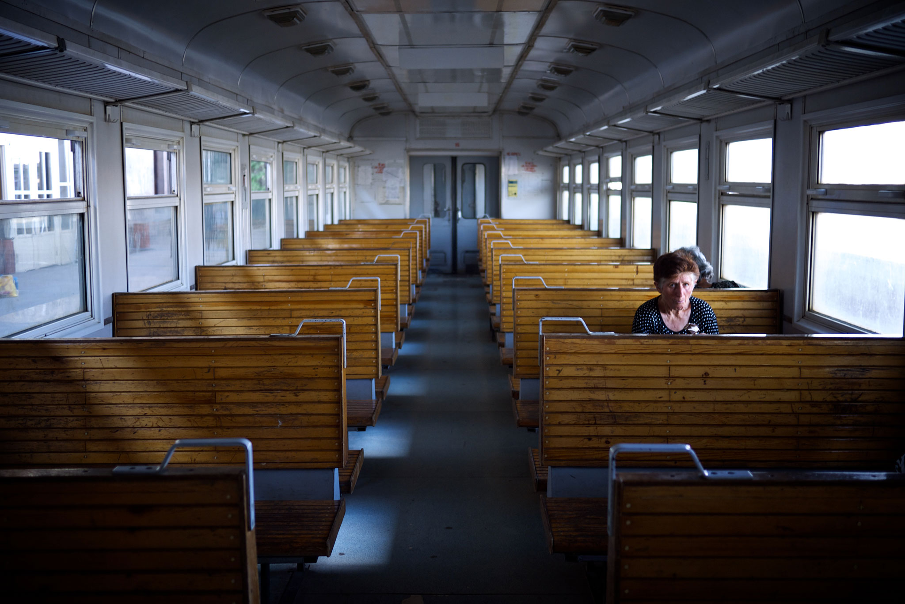

Well… This is a question that pop-up’s every now and then. For me the answer is very simple, but I’ll try to explain it a bit a wider range. First of all, it’s a personal decision to make it Black & White. Sure, many photographers make this decision. But for me, color is just disturbing and distracting. Black & White reduces the photograph to forms, patterns and content. Color normally don’t add anything to a photograph. Especially nowadays where the city is such colourful and you will have too much colour in a photograph. Maybe I should show you some examples, where colours are really disturbing.

As you can see, the image above looks much more dramatic in Black & White, but more like a snapshot in colour. Nobody would prefer this in colour, I guess. Let’s look another example. My most interesting photo on Flickr:

It’s not that bad, because there are not so many colours in the photograph. But still, I would prefer it in Black & White as the benches in brown don’t add anything to the image. Let’s look at another example.


Here the bench colour is really dominant and distracts from the foot and the jeans. I would never ever leave this in colour as it is not adding anything to it. Here is an even worse example. I didn’t remember the girls dress, but this doesn’t work in colour.


In the end a Black & White shot looks more classic, timeless, dramatic and so on. Colour very seldom adds something to a shot. If it does, I leave it in colour, but this is seldom the case. I work with faces, emotions, lines, forms, patterns and much more. For this I don’t need any drop of colour. A photograph can work very well without any kind colour .


I hope, that I could give some answers to those who asked the question about why I shoot in Black & White. If you still are not wondering, you may try it out yourself. Maybe I choose objects that would work better in Black & White rather than in colour. I have not thought too much about it. In the end I normally choose the version which works better and this is in 99% of the cases Black & White. There are so many examples I could show. But this is all my personal choice, if you choose colour, then it would be fine as well…